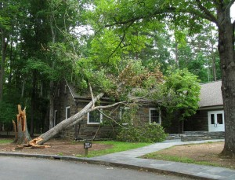

post: 6/19/2013
Storm Damage Tour
This afternoon, Wednesday June 19th at 6pm, Park Superintendent Greg Schneider gave a few of us a tour of the park. Included in the group were members of the Friends of Morrow Mountain State Park, a reporter from The Stanly News and Press, Erica Benjamin and a County Commissioner, Peter Asciutto.
{kind=link}
The tour was an effort to spread the word concerning the damage the park has sustained. The damage is extensive but no one was injured.
The museum and office both had trees hit them. Downed trees cover the campgrounds. At the top of Morrow Mountain many trees hit the parking lot walls. Many fell around the picnic area. Fortunately no damage could be seen to the picnic shelter or new restrooms. The road to the Kron home is completely blocked. The hill going into the Kron home has fallen trees across the entire hillside. There is a new overlook at the hairpin turn. A swath was taken out of the hillside starting at the roadside and continuing down the entire slope. One of the cabins has been hit hard by more than one tree. The museum's roof is covered with a large tarp. Fallen and leaning trees are everywhere and many of those will need to be cleared away before the park is safe for visitors.

{kind=link}
The office was hit.
The park staff are working hard and have the help of crews from other parks. Even so, it may be several more weeks before the park can open it's gates. Keep an eye on the official park site for updates. We will relay information as we get it. We have a Facebook page that will be getting updates.
Enjoy John Young's pictures in his Dropbox folder. The link will open in a new browser window. Peter Asciutto has 72 pictures of the damage on his Facebook page. Also, John Young's pictures are in our Photo Album along with a few other pictures of the park.